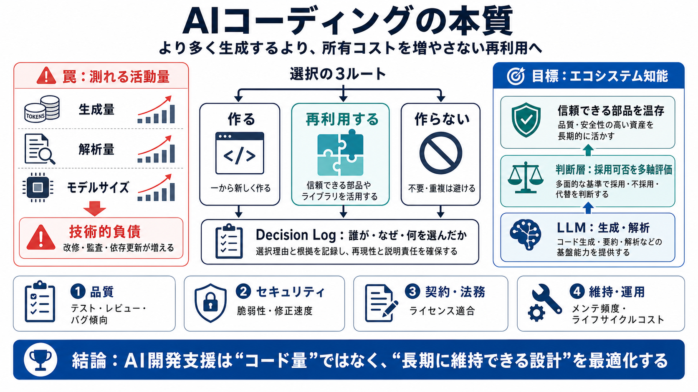

Cover
02 / 14
LLMとソフトの本質
より多くの生成でなく
所有コスト
AIコーディングは「コード量」最適化ではなく、再利用で
保守・監査・更新の負担
を増やさない方向へ設計すべきです。
(ownership cost)
本稿は、生成が増える評価（トークン経済など）よりも、信頼できる部品を選び温存する“エコシステム知能（ecosystem intelligence）”を提案します。
Problem
03 / 14
測れる指標の罠
最適化目標が
生成
LLM開発支援は、モデルサイズ・生成量・トークン処理量など
測りやすい指標
に寄りがちです。しかしソフトウェアの価値は、新規コード量より
組み立てと保守
にあります。
LLM側
評価が「活動量（生成・解析）」へ寄る
開発側
価値は「長期の改修容易性」と運用にある
Distinction
04 / 14
技術的負債の形
“生成”が
負債
になる
新規に作るほど、将来の
改修・監査・依存更新
が増え、技術的負債（technical debt）が肥大化します。負債は「手抜きの先送り」が長期で効いてきます。
近道（短期）
とりあえず実装し、後で直す
ツケ（長期）
改修困難・保守コスト上昇・検証負荷
Metaphor
05 / 14
車輪が違う
最適化は
生成
ではない
コードを書くほど得点になる設計だと、車輪（評価）が生成方向へ回り続けます。必要なのは、
所有コスト
が増えない再利用判断です。
(ownership / maintenance)
誤ったゴール
「より多いコードを出す」最適化
正しいゴール
「維持できる部品を温存する」最適化
Evidence
06 / 14
現場は“発明”より“統合”
多くの仕事は
部品選択
商用コードベースの多くにオープンソースが含まれ、平均的なアプリは多数のオープンソースコンポーネントを持ちます。だから新規生成より、
選ぶ・統合する・更新し続ける
が中心です。
1
既存部品を見つける（探索）
2
統合して動作させる（適合）
3
更新・監査・追跡（維持）
Architecture
07 / 14
ecosystem intelligence
“エコシステム層”が必要
LLMは公開ソース由来のコードを学習していますが、それだけでは足りません。AIは、
信頼できる部品を識別
し、維持されたコードを温存し、AI生成の重複や未検証コードを増やさないための“エコシステム層”が必要です。
(再利用の判断層)
学習（LLM）
コードの生成・解析能力
判断（層）
採用可否を多軸で評価
Enumeration
08 / 14
“パッケージ以上”
評価軸は
多面的
どのライブラリを使うかは、インストールできるかだけでは決まりません。品質・レビュー履歴・API安定性・パフォーマンス・ライセンス・セキュリティ・メンテ活動などを統合して判断します。
品質
バグ傾向 / テスト状況 / レビュー
セキュリティ
脆弱性情報 / スキャン / 修正速度
契約・法務
ライセンス（適合性）
維持・運用
メンテ頻度 / コミュニティ健全性 / ライフサイクルコスト
Evidence
09 / 14
セキュリティは分担
万能スキャンはない
最先端モデルは脆弱性発見や依存関係解析を強化できますが、コストが高く利用できない組織も多いです。だから“安全な部品”を少ない回数で作り、スキャン費用を共有する方向が合理的ですが、熟練者とアクセスは依然必要です。
可能
依存関係解析・脆弱性の探索を支援
制約
モデルアクセスやコストが障壁になる
Problem
10 / 14
トークン経済のズレ
“活動量”が報酬に
トークン経済（token economics）は、生成・解析・レビューなど
処理量
に強く結び付いた評価・課金・KPIを生みます。すると、ユーザー価値である「所有・保守のしやすさ」と最適化がズレます。
KPIが見るもの
生成/解析に使うトークン量
ユーザーが欲しいもの
少ない保守コスト、長期品質
Process
11 / 14
境界を決める
いつ“作らない”かを決める
未来は「完全自動のコード生成」ではなく、
いつ新規コードを作るか
、
いつ既存の安全なコードを再利用するか
、あるいはそもそも作らないかを判断するエコシステム知能にあります。
i
新規が必要か（要件充足）
ii
再利用可能か（品質/セキュリティ/ライセンス）
iii
ログを残す（意思決定の追跡）
Distinction
12 / 14
実務への問い
次の一手は
運用設計
「所有コスト」を定量化し、意思決定を公平かつ再現可能にするには、指標定義・データ品質・監査性・組織のセキュリティ要件・生成が必要な場面の境界が必要です。そうでなければ、再利用が属人的選定になってリスクが残ります。
量る
ライフサイクルコスト / 保守負担 / 品質指標
信じる
データ欠損を扱い、評価の偏りを抑える
監査する
トレース可能な決定ログ（誰が/なぜ）
境界を引く
生成が必要な新規性領域も明確化
closing
13 / 14
要点
再利用
が最適化の中心
AIコーディングは「より多くのコード生成」ではなく、信頼できる部品を見つけて再利用し、所有・保守コストを増やさない方向へ最適化すべきです。鍵は“エコシステム知能”と、意思決定ログを含む情報基盤です。
Decision: 作る/再利用する/作らない をログで残す
REFERENCES
14 / 14
References
No references found